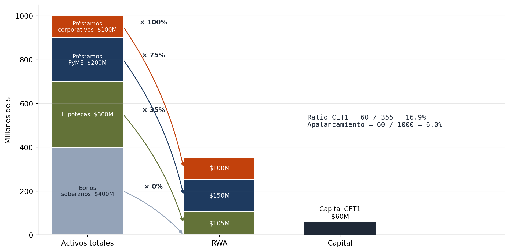
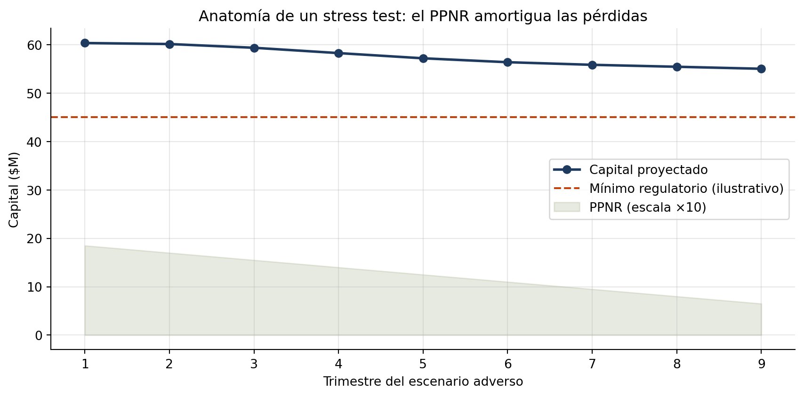
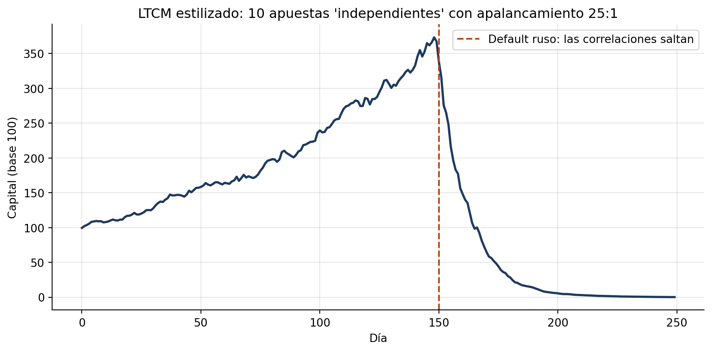
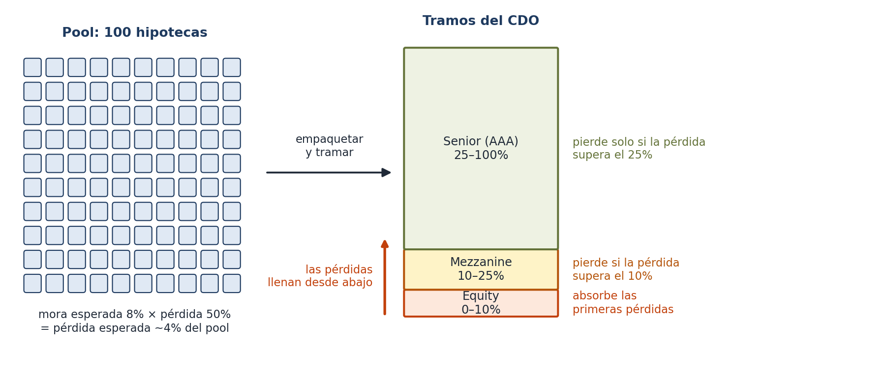

import numpy as np
import pandas as pd
import matplotlib.pyplot as plt
from scipy import stats
rng = np.random.default_rng(42)12 Capítulo 12: Riesgo y Regulación
Stress testing, Basilea III y las lecciones de las crisis
Resumen
Las métricas del capítulo anterior no viven en el vacío: existen dentro de un marco regulatorio construido, crisis tras crisis, sobre las ruinas de modelos que fallaron. Recorremos el stress testing, la arquitectura de Basilea III, el PPNR y la taxonomía de riesgos, y estudiamos en detalle dos casos que todo analista cuantitativo debería conocer de memoria: el colapso de LTCM (1998) y la crisis de 2008, con su correlación falsa en el corazón.
Introducción
En el capítulo anterior aprendimos a medir el riesgo con VaR y Expected Shortfall. Este capítulo responde una pregunta distinta: ¿qué pasa cuando los modelos fallan? Porque fallan. Y cuando fallan a escala de sistema financiero, las consecuencias las paga toda la economía.
La regulación bancaria moderna es, en gran medida, la historia acumulada de esos fracasos: cada crisis dejó una regla nueva. Entender ese marco no es un tema “legal” ajeno al análisis cuantitativo — define qué modelos se usan, cuánto capital inmovilizan los bancos y qué límites tiene la toma de riesgo. Y las dos historias que cierran el capítulo (LTCM y 2008) son las mejores clases de humildad cuantitativa jamás dictadas.
12.1 Stress testing: preguntar “¿y si…?”
El VaR mira la distribución estimada con datos recientes. El stress testing hace la pregunta complementaria: ¿cuánto perdería la cartera si se repitiera un escenario extremo concreto? No pregunta por probabilidades — pregunta por consecuencias.
Hay dos familias de escenarios:
- Históricos: replicar episodios reales (crash de 1987, crisis de 2008, COVID de marzo 2020) sobre la cartera actual.
- Hipotéticos: construir escenarios que no ocurrieron pero podrían (“el petróleo cae 50% y la tasa sube 300 puntos básicos”).
# Una cartera simple: acciones, bonos y commodities
cartera = pd.Series({"Acciones": 6_000_000, "Bonos": 3_000_000, "Commodities": 1_000_000})
# Escenarios de estrés: shock (%) aplicado a cada clase de activo
escenarios = pd.DataFrame({
"Crash 1987": {"Acciones": -0.23, "Bonos": +0.02, "Commodities": -0.05},
"Crisis 2008 (oct)": {"Acciones": -0.17, "Bonos": -0.05, "Commodities": -0.20},
"COVID mar-2020": {"Acciones": -0.12, "Bonos": +0.01, "Commodities": -0.25},
"Suba de tasas": {"Acciones": -0.08, "Bonos": -0.12, "Commodities": +0.03},
}).T
perdidas = escenarios @ cartera
print(f"Cartera total: ${cartera.sum():,.0f}\n")
print("Pérdida por escenario de estrés:")
for esc, p in perdidas.items():
print(f" {esc:<18} ${p:>12,.0f} ({p / cartera.sum():>6.1%})")Cartera total: $10,000,000
Pérdida por escenario de estrés:
Crash 1987 $ -1,370,000 (-13.7%)
Crisis 2008 (oct) $ -1,370,000 (-13.7%)
COVID mar-2020 $ -940,000 ( -9.4%)
Suba de tasas $ -810,000 ( -8.1%)La tabla de arriba es, en miniatura, lo que los reguladores exigen a los bancos a escala gigante: los CCAR/DFAST en EEUU y los stress tests del BCE someten los balances completos a escenarios macro adversos de varios años. Un banco que “no aprueba” enfrenta restricciones para pagar dividendos o recomprar acciones.
TipVaR y stress testing se complementan
El VaR dice “esto es lo que puede pasar en un día normal-malo, según los datos recientes”. El stress test dice “esto es lo que pasaría si vuelve 2008, tengan los datos recientes la pinta que tengan”. El primero es probabilístico y miope; el segundo es determinístico y de memoria larga. Un buen tablero de riesgo muestra ambos.
12.2 Basilea III: la arquitectura regulatoria
Los Acuerdos de Basilea son los estándares globales de regulación bancaria, emitidos por el Comité de Basilea (BIS). La versión III, respuesta directa a 2008, se apoya en tres pilares conceptuales: capital de mejor calidad, límites al apalancamiento y —por primera vez— reglas de liquidez.
La Figura 12.1 es el mapa de esta sección: qué riesgos mide el regulador, con qué herramienta, y en qué ratio termina cada uno.
flowchart LR
RC["Riesgo de crédito<br/><i>PD · LGD · EAD</i>"] --> RWA
RM["Riesgo de mercado<br/><i>VaR / ES · FRTB</i>"] --> RWA
RO["Riesgo operacional<br/><i>eventos · escenarios</i>"] --> RWA
RWA[["RWA<br/>activos ponderados<br/>por riesgo"]] --> CET1["<b>Capital</b><br/>CET1 / RWA ≥ ~10.5%"]
AT["Activos totales<br/><i>sin ponderar</i>"] --> LEV["<b>Apalancamiento</b><br/>capital / activos ≥ 3%"]
FON["Fondeo y<br/>activos líquidos"] --> LIQ["<b>Liquidez</b><br/>LCR: 30 días de corrida<br/>NSFR: fondeo estable"]
CET1 --> ST{{"<b>Stress testing</b><br/>CCAR · PPNR<br/>¿aguanta 9 trimestres?"}}
LEV --> ST
LIQ --> ST
classDef riesgo fill:#fde8dc,stroke:#c2410c,color:#1f2937
classDef ratio fill:#e0e9f4,stroke:#1e3a5f,color:#1f2937
classDef st fill:#eef2e3,stroke:#637238,color:#1f2937
class RC,RM,RO riesgo
class CET1,LEV,LIQ ratio
class ST st
12.2.1 Capital: el colchón contra pérdidas
La idea central: los activos de un banco pueden perder valor; el capital propio es el colchón que absorbe esas pérdidas antes de que las paguen los depositantes. Basilea exige un mínimo de capital en proporción al riesgo de los activos:
\[\text{Ratio de capital} = \frac{\text{Capital}}{\text{RWA}} \geq \text{mínimos regulatorios}\]
donde RWA (Risk-Weighted Assets) son los activos ponderados por riesgo: un bono del tesoro pondera cerca de 0%, una hipoteca ~35-50%, un préstamo corporativo riesgoso 100% o más. Mil millones en letras del tesoro exigen mucho menos capital que mil millones en préstamos a startups — razonable.
# Balance simplificado de un banco
activos = pd.DataFrame({
"monto": [400, 300, 200, 100], # en millones
"ponderacion": [0.00, 0.35, 0.75, 1.00], # peso por riesgo (Basilea, aprox.)
}, index=["Bonos soberanos", "Hipotecas", "Préstamos PyME", "Préstamos corporativos"])
activos["RWA"] = activos["monto"] * activos["ponderacion"]
capital = 60 # millones de capital CET1
print(activos)
print(f"\nActivos totales: ${activos['monto'].sum():,.0f}M")
print(f"RWA totales: ${activos['RWA'].sum():,.0f}M")
print(f"Ratio CET1: {capital / activos['RWA'].sum():.1%} (mínimo con colchones: ~10.5%)")
print(f"Ratio de apalancamiento: {capital / activos['monto'].sum():.1%} (mínimo: 3%)") monto ponderacion RWA
Bonos soberanos 400 0.00 0.0
Hipotecas 300 0.35 105.0
Préstamos PyME 200 0.75 150.0
Préstamos corporativos 100 1.00 100.0
Activos totales: $1,000M
RWA totales: $355M
Ratio CET1: 16.9% (mínimo con colchones: ~10.5%)
Ratio de apalancamiento: 6.0% (mínimo: 3%)Fijate el contraste entre los dos ratios finales: el de capital usa RWA (sensible al riesgo), el de apalancamiento usa activos totales sin ponderar. Basilea III agregó el segundo justamente porque en 2008 varios bancos lucían ratios de capital sólidos… calculados sobre RWA que subestimaban el riesgo real.
La Figura 12.2 muestra la transformación: cada bloque del balance se achica según su ponderación, y el mismo capital se mide contra dos denominadores muy distintos.

12.2.2 Liquidez: sobrevivir a la corrida
2008 demostró que un banco puede ser solvente y morir igual por iliquidez: si el fondeo de corto plazo desaparece de un día para otro, no hay capital que alcance. Basilea III introdujo dos ratios:
- LCR (Liquidity Coverage Ratio): tener activos líquidos de alta calidad suficientes para sobrevivir 30 días de fuga de depósitos y fondeo.
- NSFR (Net Stable Funding Ratio): que los activos de largo plazo estén fondeados con pasivos estables, no con deuda que vence mañana.
12.2.3 PPNR: la otra mitad del stress test
En los stress tests regulatorios, la pérdida de capital de un banco no depende solo de cuánto pierden sus activos, sino de cuánto sigue ganando su negocio durante la crisis. Esa capacidad de generar resultados se proyecta con el PPNR (Pre-Provision Net Revenue): ingresos netos por intereses + comisiones − gastos operativos, antes de provisiones por incobrables.
\[\Delta \text{Capital} \approx \text{PPNR} - \text{Pérdidas crediticias} - \text{Pérdidas de trading} - \text{Impuestos y dividendos}\]
# Proyección estilizada a 9 trimestres (formato CCAR) bajo escenario adverso
trimestres = np.arange(1, 10)
ppnr = 2.0 - 0.15 * trimestres # el negocio se deteriora gradualmente
perdidas_credito = 1.0 + 1.5 * np.exp(-0.5 * (trimestres - 4) ** 2 / 4) # pico de mora
capital_inicial = 60
capital = capital_inicial + np.cumsum(ppnr - perdidas_credito)
fig, ax = plt.subplots(figsize=(9, 4.5))
ax.plot(trimestres, capital, "o-", linewidth=2, label="Capital proyectado")
ax.axhline(45, color="#c2410c", linestyle="--", label="Mínimo regulatorio (ilustrativo)")
ax.fill_between(trimestres, 0, ppnr * 10, alpha=0.15, color="#637238",
label="PPNR (escala ×10)")
ax.set_xlabel("Trimestre del escenario adverso")
ax.set_ylabel("Capital ($M)")
ax.set_title("Anatomía de un stress test: el PPNR amortigua las pérdidas")
ax.legend()
ax.grid(True, alpha=0.3)
plt.tight_layout()
plt.show()
La lección de la Figura 12.3: un banco con PPNR robusto puede absorber una ola de pérdidas crediticias sin acercarse al mínimo; uno con PPNR débil llega a la misma crisis sin amortiguador. Por eso los equipos de PPNR de los bancos grandes emplean pequeños ejércitos de modeladores.
12.2.4 Riesgo de mercado vs. riesgo operacional
Basilea clasifica los riesgos en tres grandes categorías, cada una con su carga de capital:
| Riesgo | Qué es | Ejemplo | Herramienta típica |
|---|---|---|---|
| De crédito | La contraparte no paga | Mora hipotecaria | PD/LGD/EAD, provisiones |
| De mercado | Los precios se mueven en contra | Caída del portafolio de trading | VaR, ES (FRTB) |
| Operacional | Fallas de procesos, sistemas, personas | Fraude, cyberataque, fat finger | Bases de eventos, escenarios |
El riesgo operacional es el más resbaladizo: no tiene “posición” que cerrar ni distribución de mercado que estimar. Casos célebres: Barings (1995, un solo trader ocultando pérdidas quebró un banco de 233 años), Société Générale (2008, €4.9bn), Knight Capital (2012, un deploy de software defectuoso perdió $440M en 45 minutos). Su gestión es más de procesos y controles que de matemática — pero su carga de capital es real.
12.3 Caso 1 — LTCM: cuando los genios fallan
Long-Term Capital Management era, en 1997, el hedge fund más prestigioso del planeta: fundado por el legendario trader John Meriwether, con Myron Scholes y Robert Merton (Nobel 1997, los del modelo de opciones) en el directorio. Su estrategia: convergence trades — apostar a que diferenciales de precio entre bonos casi idénticos (por ejemplo, un bono del tesoro recién emitido contra uno viejo) se achicarían. Diferenciales minúsculos, así que para volverlos rentables usaban un apalancamiento de ~25:1: con $4.7bn de capital controlaban más de $125bn en posiciones.
Los modelos decían que esas posiciones eran seguras: los diferenciales siempre convergían, y las posiciones estaban diversificadas entre mercados supuestamente independientes.
En agosto de 1998, Rusia defaulteó su deuda. Y ocurrió lo que los modelos no contemplaban: en la corrida global hacia la calidad, todos los diferenciales se ampliaron a la vez. Posiciones “independientes” en Japón, Europa y EEUU perdieron juntas: la correlación, que en los datos históricos era baja, saltó hacia 1 exactamente cuando importaba. Con 25:1 de apalancamiento, no hay margen para esperar la convergencia: los margin calls obligan a vender en el peor momento, ampliando aún más los diferenciales — una espiral. En pocas semanas LTCM perdió $4.4bn, y la Fed de Nueva York tuvo que coordinar un rescate privado para evitar que la liquidación forzada arrastrara al sistema.
Lo que mató a LTCM no fue una pérdida, sino un circuito que se alimenta solo. La Figura 12.4 lo dibuja: una vez que arranca, cada vuelta agranda la siguiente.
flowchart LR
D(["Default ruso<br/><i>ago-1998</i>"]) --> S
S["Los spreads<br/>se amplían<br/><i>en todos los mercados</i>"] --> P["Pérdidas<br/>× 25 de<br/>apalancamiento"]
P --> M["Llamadas<br/>de margen"]
M --> V["Venta forzada<br/>en mercados<br/>sin liquidez"]
V -->|"más vendedores,<br/>mismos compradores"| S
classDef shock fill:#fde8dc,stroke:#c2410c,color:#1f2937
classDef ciclo fill:#e0e9f4,stroke:#1e3a5f,color:#1f2937
class D shock
class S,P,M,V ciclo
# La mecánica de LTCM en miniatura: apalancamiento + correlaciones que saltan
n_dias = 250
n_estrategias = 10 # "apuestas independientes" de convergencia
apalancamiento = 25
# Días normales: estrategias casi independientes (correlación 0.1), retorno positivo chico
# Crisis (día 150 en adelante): correlación 0.9 y drift negativo
def simular_pnl(rho, mu_d, n_dias, n_est, rng):
L = np.linalg.cholesky(np.full((n_est, n_est), rho) + (1 - rho) * np.eye(n_est))
shocks = rng.standard_normal((n_dias, n_est)) @ L.T
return mu_d + 0.0015 * shocks
pnl_normal = simular_pnl(0.10, +0.0004, 150, n_estrategias, rng)
pnl_crisis = simular_pnl(0.90, -0.0025, 100, n_estrategias, rng)
pnl_total = np.vstack([pnl_normal, pnl_crisis]).mean(axis=1) # cartera equiponderada
equity = 100 * np.cumprod(1 + apalancamiento * pnl_total)
fig, ax = plt.subplots(figsize=(9, 4.5))
ax.plot(equity, linewidth=2)
ax.axvline(150, color="#c2410c", linestyle="--", label="Default ruso: las correlaciones saltan")
ax.set_xlabel("Día")
ax.set_ylabel("Capital (base 100)")
ax.set_title(f"LTCM estilizado: {n_estrategias} apuestas 'independientes' con apalancamiento {apalancamiento}:1")
ax.legend()
ax.grid(True, alpha=0.3)
plt.tight_layout()
plt.show()
print(f"Capital final: {equity[-1]:.0f} (arrancó en 100)")Capital final: 0 (arrancó en 100)Recorré la Figura 12.5 de izquierda a derecha: meses de retornos suaves y consistentes (la diversificación “funciona”, el apalancamiento multiplica una ganancia estable) y luego el precipicio, cuando las diez apuestas se vuelven una sola y el 25:1 multiplica la pérdida. Las lecciones de LTCM, que la industria recita desde entonces:
- Las correlaciones históricas no son un contrato: en las crisis convergen a 1, exactamente cuando la diversificación más se necesita.
- El apalancamiento convierte problemas de precio en problemas de supervivencia: sin margen para esperar, tenés que vender en el peor momento.
- La liquidez es un riesgo en sí mismo: LTCM tenía razón “a largo plazo” en muchas posiciones — pero como dijo Keynes, el mercado puede permanecer irracional más tiempo del que vos podés permanecer solvente.
- El prestigio de los modelos (y de los Nobel) no es gestión de riesgo.
12.4 Caso 2 — 2008: la correlación falsa
La crisis de 2008 es demasiado grande para un capítulo; acá nos enfocamos en su corazón cuantitativo: cómo un supuesto de correlación mal calibrado, industrializado a escala de billones de dólares, hizo estallar el sistema.
12.4.1 La maquinaria: securitización y CDOs
La cadena, simplificada: los bancos originaban hipotecas (crecientemente subprime, de baja calidad), las empaquetaban en bonos (MBS), y luego empaquetaban esos bonos en CDOs (Collateralized Debt Obligations) divididos en tramos: el tramo senior cobra primero (y tenía calificación AAA), el equity absorbe las primeras pérdidas.
¿Cómo puede un paquete de hipotecas mediocres producir un tramo AAA? Por la diversificación: si los defaults son suficientemente independientes entre sí, la probabilidad de que fallen muchas a la vez —que es lo único que daña al tramo senior— es minúscula. Todo el edificio descansa en una pregunta: ¿cuán correlacionados están los defaults de las hipotecas?
La Figura 12.6 muestra la cascada de pérdidas: lo que pierde el pool se va apilando desde abajo, y cada tramo solo empieza a perder cuando el de abajo ya se perdió entero.

12.4.2 La fórmula: la cópula gaussiana
Para responderla, la industria adoptó masivamente la cópula gaussiana de David Li (2000): un modelo elegante que describe la dependencia entre defaults con un único parámetro de correlación \(\rho\), calibrado con datos históricos… de años en que la vivienda en EEUU nunca había caído a escala nacional. La calibración típica asumía correlaciones bajas: los defaults eran eventos idiosincráticos (alguien pierde su empleo), no sistémicos.
El error fatal: cuando los precios de la vivienda caen a nivel nacional, todos los deudores subprime entran en problemas por la misma causa al mismo tiempo. La correlación real en el escenario relevante no era 0.2: era cercana a 1.
# Un CDO de juguete: 100 hipotecas, tramo senior absorbe pérdidas > 25%
n_hipotecas, n_escenarios = 100, 50_000
prob_default, perdida_por_default = 0.08, 0.5 # 8% de mora esperada, pierde 50%
def perdida_cartera(rho, rng):
"""Modelo de un factor gaussiano: factor común (economía) + shock individual."""
factor_comun = rng.standard_normal((n_escenarios, 1))
idiosincratico = rng.standard_normal((n_escenarios, n_hipotecas))
salud = np.sqrt(rho) * factor_comun + np.sqrt(1 - rho) * idiosincratico
umbral = stats.norm.ppf(prob_default)
defaults = salud < umbral
return defaults.mean(axis=1) * perdida_por_default
print(f"{'ρ':>5}{'Pérdida media':>15}{'P(pérdida > 25%)':>20} ¿El tramo senior (AAA) paga?")
for rho in [0.05, 0.20, 0.60]:
perdidas = perdida_cartera(rho, np.random.default_rng(1))
p_senior = (perdidas > 0.25).mean()
print(f"{rho:>5.2f}{perdidas.mean():>14.1%}{p_senior:>19.2%} "
f"{'casi siempre' if p_senior < 0.005 else 'NO: riesgo real'}") ρ Pérdida media P(pérdida > 25%) ¿El tramo senior (AAA) paga?
0.05 4.0% 0.00% casi siempre
0.20 4.0% 0.09% casi siempre
0.60 4.0% 3.39% NO: riesgo realMirá la tabla: la pérdida promedio es la misma en las tres filas (la correlación no cambia cuántas hipotecas caen en promedio), pero la probabilidad de que la pérdida atraviese el tramo senior se multiplica por órdenes de magnitud al subir \(\rho\). Con \(\rho\) bajo, las pérdidas siempre rondan el promedio y el AAA es intocable; con \(\rho\) alto, la distribución se vuelve bimodal — o no pasa casi nada, o caen todas juntas. El mismo instrumento, la misma mora esperada… y calificaciones que pasaron de “prácticamente libre de riesgo” a basura en cuestión de meses de 2007-2008.
Simulador · El CDO y la correlación
La tabla de arriba prueba tres valores de \(\rho\) con Monte Carlo. Acá \(\rho\) se mueve de forma continua, junto con la mora, la pérdida por default y los puntos donde empieza cada tramo. Las barras son la distribución exacta de la pérdida del pool: condicional al factor común, los defaults son independientes y su número sigue una binomial, así que alcanza con integrar esa binomial sobre el factor, sin simular. Por eso las probabilidades pueden diferir en algún decimal de las de la tabla, que traen ruido de muestreo. Arranca con el CDO del capítulo.
El resto de la historia se sigue de ahí: los tramos AAA estaban en todos lados (bancos, fondos, aseguradoras como AIG que los aseguraban vía CDS), nadie sabía quién tenía cuánto, el interbancario se congeló, Lehman cayó, y el mundo descubrió la diferencia entre riesgo (lo que el modelo mide) e incertidumbre (lo que el modelo ni siquiera contempla).
Las lecciones de 2008 para el modelador:
- Un parámetro calibrado en tiempos de calma no describe la crisis: la correlación es condicional al régimen, y el régimen que importa es el peor.
- La elegancia matemática no valida los supuestos: la cópula gaussiana era tratable y estándar; su supuesto central era falso.
- El riesgo de modelo se industrializa: un modelo mediocre usado por una mesa es un problema local; usado por toda la industria para calificar billones, es sistémico.
- Las colas y la dependencia extrema importan más que el centro: dos distribuciones con la misma media y varianza pueden tener riesgos de cola radicalmente distintos — el puente perfecto hacia el próximo capítulo.
12.5 Errores comunes
AdvertenciaTrampas conceptuales de este capítulo
- Tratar la correlación como constante: es la trampa que une LTCM y 2008. Estimá correlaciones condicionales a regímenes de estrés, no promedios históricos.
- Confundir solvencia con liquidez: podés tener razón en la valuación y quebrar igual si el fondeo desaparece antes de que el precio converja.
- Leer los stress tests como pronósticos: un escenario no es una predicción; es una linterna apuntada a una vulnerabilidad.
- Creer que la regulación elimina el riesgo: lo redistribuye y lo acota. Cada marco regulatorio genera, además, sus propios incentivos y puntos ciegos (el arbitraje regulatorio de los RWA fue parte del problema en 2008).